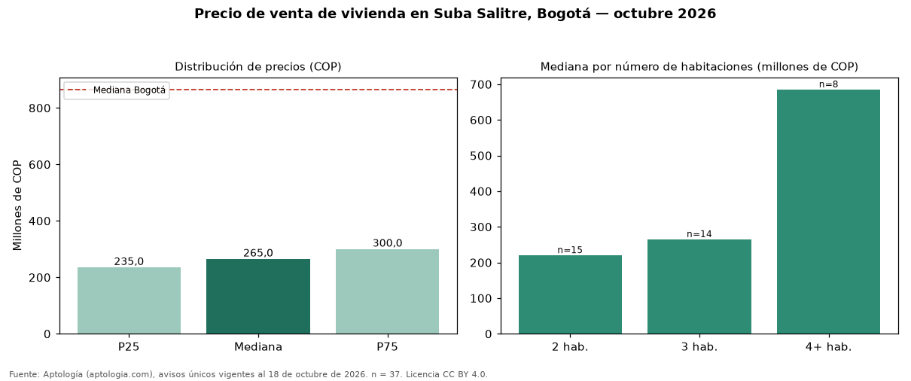

Precio de venta de vivienda en Suba Salitre, Bogotá — octubre 2026
En Suba Salitre, Bogotá, la mediana de precio de venta de vivienda es COP 265 millones, según 37 avisos únicos vigentes. Eso la ubica 69 % por debajo de la mediana de Bogotá para vivienda (COP 865 millones). El área mediana anunciada es 53 m² (en Bogotá: 146 m²). Por metro cuadrado, la mediana es COP 4.821.429/m² (−26 % frente a COP 6.557.377/m² en Bogotá), puesto 230 de 280 barrios con muestra suficiente. El segmento con más oferta es el de 2 habitaciones (15 avisos, mediana COP 220 millones); pasar de 2 habitaciones a 3 habitaciones sube la mediana 20 %. El estrato más frecuente en los avisos es 3. La antigüedad mediana declarada es de 3 años. Datos abiertos CC BY 4.0 de Aptología; fuente y búsqueda de inmuebles: https://www.aptologia.com/venta/bogota/suba-salitre. Archivos: PDF de 2 páginas, CSV con las cifras y gráfica PNG.

| Avisos únicos | 37 |
|---|---|
| Percentil 25 | COP 235.000.000 |
| Mediana | COP 265.000.000 |
| Percentil 75 | COP 300.000.000 |
| Mediana por m² | COP 4.821.428 |
Fuente: avisos vigentes de portales inmobiliarios recopilados por Aptología, deduplicados (mínimo 30 avisos únicos por celda). Precios pedidos, no cerrados. Fecha: 2026-10-18.